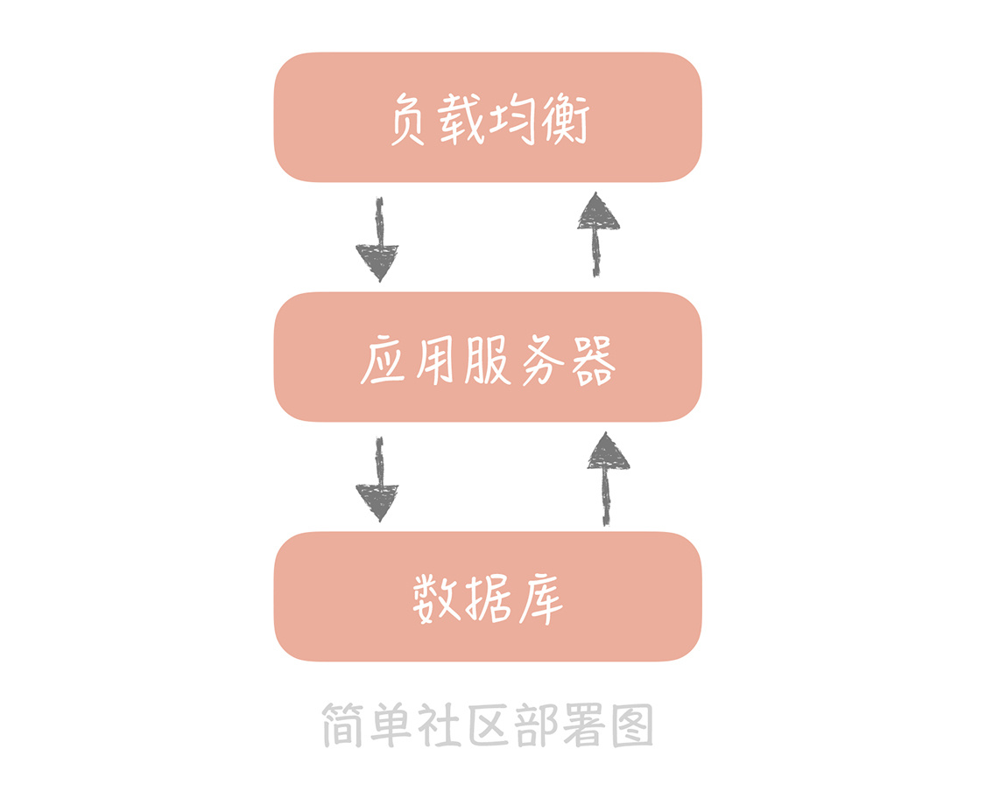
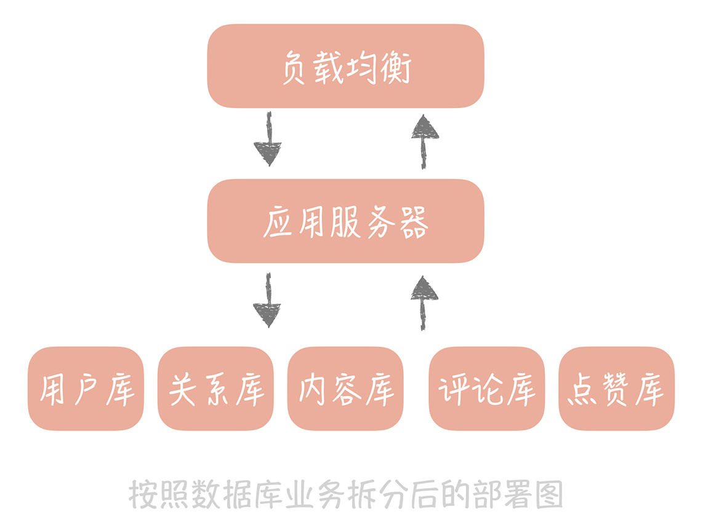

<!DOCTYPE html>

<!-- saved from url=(0046)https://kaiiiz.github.io/hexo-theme-book-demo/ -->

<html xmlns="http://www.w3.org/1999/xhtml">

<head>

    <head>

        <meta http-equiv="Content-Type" content="text/html; charset=UTF-8">

        <meta name="viewport" content="width=device-width, initial-scale=1, maximum-scale=1.0, user-scalable=no">

        <link rel="icon" href="/static/favicon.png">

        <title>05  系统设计目标（三）：如何让系统易于扩展？.md.html</title>

        <!-- Spectre.css framework -->

        <link rel="stylesheet" href="/static/index.css">

        <!-- theme css & js -->

        <meta name="generator" content="Hexo 4.2.0">

    </head>


<body>


<div class="book-container">

    <div class="book-sidebar">

        <div class="book-brand">

            <a href="/">

                

                <span>技术文章摘抄</span>

            </a>

        </div>

        <div class="book-menu uncollapsible">

            <ul class="uncollapsible">

                <li><a href="/" class="current-tab">首页</a></li>

            </ul>


            <ul class="uncollapsible">

                <li><a href="../">上一级</a></li>

            </ul>


            <ul class="uncollapsible">

                <li>


                    

                    <a href="/专栏/高并发系统设计40问/00 开篇词  为什么你要学习高并发系统设计？.md.html">00 开篇词  为什么你要学习高并发系统设计？.md.html</a>


                </li>

                <li>


                    

                    <a href="/专栏/高并发系统设计40问/01  高并发系统：它的通用设计方法是什么？.md.html">01  高并发系统：它的通用设计方法是什么？.md.html</a>


                </li>

                <li>


                    

                    <a href="/专栏/高并发系统设计40问/02  架构分层：我们为什么一定要这么做？.md.html">02  架构分层：我们为什么一定要这么做？.md.html</a>


                </li>

                <li>


                    

                    <a href="/专栏/高并发系统设计40问/03  系统设计目标（一）：如何提升系统性能？.md.html">03  系统设计目标（一）：如何提升系统性能？.md.html</a>


                </li>

                <li>


                    

                    <a href="/专栏/高并发系统设计40问/04  系统设计目标（二）：系统怎样做到高可用？.md.html">04  系统设计目标（二）：系统怎样做到高可用？.md.html</a>


                </li>

                <li>


                    <a class="current-tab" href="/专栏/高并发系统设计40问/05  系统设计目标（三）：如何让系统易于扩展？.md.html">05  系统设计目标（三）：如何让系统易于扩展？.md.html</a>

                    


                </li>

                <li>


                    

                    <a href="/专栏/高并发系统设计40问/06  面试现场第一期：当问到组件实现原理时，面试官是在刁难你吗？.md.html">06  面试现场第一期：当问到组件实现原理时，面试官是在刁难你吗？.md.html</a>


                </li>

                <li>


                    

                    <a href="/专栏/高并发系统设计40问/07  池化技术：如何减少频繁创建数据库连接的性能损耗？.md.html">07  池化技术：如何减少频繁创建数据库连接的性能损耗？.md.html</a>


                </li>

                <li>


                    

                    <a href="/专栏/高并发系统设计40问/08  数据库优化方案（一）：查询请求增加时，如何做主从分离？.md.html">08  数据库优化方案（一）：查询请求增加时，如何做主从分离？.md.html</a>


                </li>

                <li>


                    

                    <a href="/专栏/高并发系统设计40问/09  数据库优化方案（二）：写入数据量增加时，如何实现分库分表？.md.html">09  数据库优化方案（二）：写入数据量增加时，如何实现分库分表？.md.html</a>


                </li>

                <li>


                    

                    <a href="/专栏/高并发系统设计40问/10  发号器：如何保证分库分表后ID的全局唯一性？.md.html">10  发号器：如何保证分库分表后ID的全局唯一性？.md.html</a>


                </li>

                <li>


                    

                    <a href="/专栏/高并发系统设计40问/11  NoSQL：在高并发场景下，数据库和NoSQL如何做到互补？.md.html">11  NoSQL：在高并发场景下，数据库和NoSQL如何做到互补？.md.html</a>


                </li>

                <li>


                    

                    <a href="/专栏/高并发系统设计40问/12  缓存：数据库成为瓶颈后，动态数据的查询要如何加速？.md.html">12  缓存：数据库成为瓶颈后，动态数据的查询要如何加速？.md.html</a>


                </li>

                <li>


                    

                    <a href="/专栏/高并发系统设计40问/13  缓存的使用姿势（一）：如何选择缓存的读写策略？.md.html">13  缓存的使用姿势（一）：如何选择缓存的读写策略？.md.html</a>


                </li>

                <li>


                    

                    <a href="/专栏/高并发系统设计40问/14  缓存的使用姿势（二）：缓存如何做到高可用？.md.html">14  缓存的使用姿势（二）：缓存如何做到高可用？.md.html</a>


                </li>

                <li>


                    

                    <a href="/专栏/高并发系统设计40问/15  缓存的使用姿势（三）：缓存穿透了怎么办？.md.html">15  缓存的使用姿势（三）：缓存穿透了怎么办？.md.html</a>


                </li>

                <li>


                    

                    <a href="/专栏/高并发系统设计40问/16  CDN：静态资源如何加速？.md.html">16  CDN：静态资源如何加速？.md.html</a>


                </li>

                <li>


                    

                    <a href="/专栏/高并发系统设计40问/17  消息队列：秒杀时如何处理每秒上万次的下单请求？.md.html">17  消息队列：秒杀时如何处理每秒上万次的下单请求？.md.html</a>


                </li>

                <li>


                    

                    <a href="/专栏/高并发系统设计40问/18  消息投递：如何保证消息仅仅被消费一次？.md.html">18  消息投递：如何保证消息仅仅被消费一次？.md.html</a>


                </li>

                <li>


                    

                    <a href="/专栏/高并发系统设计40问/19  消息队列：如何降低消息队列系统中消息的延迟？.md.html">19  消息队列：如何降低消息队列系统中消息的延迟？.md.html</a>


                </li>

                <li>


                    

                    <a href="/专栏/高并发系统设计40问/20  面试现场第二期：当问到项目经历时，面试官究竟想要了解什么？.md.html">20  面试现场第二期：当问到项目经历时，面试官究竟想要了解什么？.md.html</a>


                </li>

                <li>


                    

                    <a href="/专栏/高并发系统设计40问/21  系统架构：每秒1万次请求的系统要做服务化拆分吗？.md.html">21  系统架构：每秒1万次请求的系统要做服务化拆分吗？.md.html</a>


                </li>

                <li>


                    

                    <a href="/专栏/高并发系统设计40问/22  微服务架构：微服务化后，系统架构要如何改造？.md.html">22  微服务架构：微服务化后，系统架构要如何改造？.md.html</a>


                </li>

                <li>


                    

                    <a href="/专栏/高并发系统设计40问/23  RPC框架：10万QPS下如何实现毫秒级的服务调用？.md.html">23  RPC框架：10万QPS下如何实现毫秒级的服务调用？.md.html</a>


                </li>

                <li>


                    

                    <a href="/专栏/高并发系统设计40问/24  注册中心：分布式系统如何寻址？.md.html">24  注册中心：分布式系统如何寻址？.md.html</a>


                </li>

                <li>


                    

                    <a href="/专栏/高并发系统设计40问/25  分布式Trace：横跨几十个分布式组件的慢请求要如何排查？.md.html">25  分布式Trace：横跨几十个分布式组件的慢请求要如何排查？.md.html</a>


                </li>

                <li>


                    

                    <a href="/专栏/高并发系统设计40问/26  负载均衡：怎样提升系统的横向扩展能力？.md.html">26  负载均衡：怎样提升系统的横向扩展能力？.md.html</a>


                </li>

                <li>


                    

                    <a href="/专栏/高并发系统设计40问/27  API网关：系统的门面要如何做呢？.md.html">27  API网关：系统的门面要如何做呢？.md.html</a>


                </li>

                <li>


                    

                    <a href="/专栏/高并发系统设计40问/28  多机房部署：跨地域的分布式系统如何做？.md.html">28  多机房部署：跨地域的分布式系统如何做？.md.html</a>


                </li>

                <li>


                    

                    <a href="/专栏/高并发系统设计40问/29  Service Mesh：如何屏蔽服务化系统的服务治理细节？.md.html">29  Service Mesh：如何屏蔽服务化系统的服务治理细节？.md.html</a>


                </li>

                <li>


                    

                    <a href="/专栏/高并发系统设计40问/30  给系统加上眼睛：服务端监控要怎么做？.md.html">30  给系统加上眼睛：服务端监控要怎么做？.md.html</a>


                </li>

                <li>


                    

                    <a href="/专栏/高并发系统设计40问/31  应用性能管理：用户的使用体验应该如何监控？.md.html">31  应用性能管理：用户的使用体验应该如何监控？.md.html</a>


                </li>

                <li>


                    

                    <a href="/专栏/高并发系统设计40问/32  压力测试：怎样设计全链路压力测试平台？.md.html">32  压力测试：怎样设计全链路压力测试平台？.md.html</a>


                </li>

                <li>


                    

                    <a href="/专栏/高并发系统设计40问/33  配置管理：成千上万的配置项要如何管理？.md.html">33  配置管理：成千上万的配置项要如何管理？.md.html</a>


                </li>

                <li>


                    

                    <a href="/专栏/高并发系统设计40问/34  降级熔断：如何屏蔽非核心系统故障的影响？.md.html">34  降级熔断：如何屏蔽非核心系统故障的影响？.md.html</a>


                </li>

                <li>


                    

                    <a href="/专栏/高并发系统设计40问/35  流量控制：高并发系统中我们如何操纵流量？.md.html">35  流量控制：高并发系统中我们如何操纵流量？.md.html</a>


                </li>

                <li>


                    

                    <a href="/专栏/高并发系统设计40问/36  面试现场第三期：你要如何准备一场技术面试呢？.md.html">36  面试现场第三期：你要如何准备一场技术面试呢？.md.html</a>


                </li>

                <li>


                    

                    <a href="/专栏/高并发系统设计40问/37  计数系统设计（一）：面对海量数据的计数器要如何做？.md.html">37  计数系统设计（一）：面对海量数据的计数器要如何做？.md.html</a>


                </li>

                <li>


                    

                    <a href="/专栏/高并发系统设计40问/38  计数系统设计（二）：50万QPS下如何设计未读数系统？.md.html">38  计数系统设计（二）：50万QPS下如何设计未读数系统？.md.html</a>


                </li>

                <li>


                    

                    <a href="/专栏/高并发系统设计40问/39  信息流设计（一）：通用信息流系统的推模式要如何做？.md.html">39  信息流设计（一）：通用信息流系统的推模式要如何做？.md.html</a>


                </li>

                <li>


                    

                    <a href="/专栏/高并发系统设计40问/40  信息流设计（二）：通用信息流系统的拉模式要如何做？.md.html">40  信息流设计（二）：通用信息流系统的拉模式要如何做？.md.html</a>


                </li>

                <li>


                    

                    <a href="/专栏/高并发系统设计40问/加餐  数据的迁移应该如何做？.md.html">加餐  数据的迁移应该如何做？.md.html</a>


                </li>

                <li>


                    

                    <a href="/专栏/高并发系统设计40问/期中测试  10道高并发系统设计题目自测.md.html">期中测试  10道高并发系统设计题目自测.md.html</a>


                </li>

                <li>


                    

                    <a href="/专栏/高并发系统设计40问/用户故事  从“心”出发，我还有无数个可能.md.html">用户故事  从“心”出发，我还有无数个可能.md.html</a>


                </li>

                <li>


                    

                    <a href="/专栏/高并发系统设计40问/结束语  学不可以已.md.html">结束语  学不可以已.md.html</a>


                </li>

            </ul>


        </div>

    </div>


    <div class="sidebar-toggle" onclick="sidebar_toggle()" onmouseover="add_inner()" onmouseleave="remove_inner()">

        <div class="sidebar-toggle-inner"></div>

    </div>


    <script>

        function add_inner() {

            let inner = document.querySelector('.sidebar-toggle-inner')

            inner.classList.add('show')

        }


        function remove_inner() {

            let inner = document.querySelector('.sidebar-toggle-inner')

            inner.classList.remove('show')

        }


        function sidebar_toggle() {

            let sidebar_toggle = document.querySelector('.sidebar-toggle')

            let sidebar = document.querySelector('.book-sidebar')

            let content = document.querySelector('.off-canvas-content')

            if (sidebar_toggle.classList.contains('extend')) { // show

                sidebar_toggle.classList.remove('extend')

                sidebar.classList.remove('hide')

                content.classList.remove('extend')

            } else { // hide

                sidebar_toggle.classList.add('extend')

                sidebar.classList.add('hide')

                content.classList.add('extend')

            }

        }


function open_sidebar() {

    let sidebar = document.querySelector('.book-sidebar')

    let overlay = document.querySelector('.off-canvas-overlay')

    sidebar.classList.add('show')

    overlay.classList.add('show')

}

function hide_canvas() {

    let sidebar = document.querySelector('.book-sidebar')

    let overlay = document.querySelector('.off-canvas-overlay')

    sidebar.classList.remove('show')

    overlay.classList.remove('show')

}


    </script>


    <div class="off-canvas-content">

        <div class="columns">

            <div class="column col-12 col-lg-12">

                <div class="book-navbar">

                    <!-- For Responsive Layout -->

                    <header class="navbar">

                        <section class="navbar-section">

                            <a onclick="open_sidebar()">

                                <i class="icon icon-menu"></i>

                            </a>

                        </section>

                    </header>

                </div>

                <div class="book-content" style="max-width: 960px; margin: 0 auto;

    overflow-x: auto;

    overflow-y: hidden;">

                    <div class="book-post">

                        <p id="tip" align="center"></p>

                        <div><h1>05  系统设计目标（三）：如何让系统易于扩展？</h1>

<p>从架构设计上来说，高可扩展性是一个设计的指标，它表示可以通过增加机器的方式来线性提高系统的处理能力，从而承担更高的流量和并发。</p>

<p>你可能会问：“在架构设计之初，为什么不预先考虑好使用多少台机器，支持现有的并发呢？”这个问题我在“[03 | 系统设计目标（一）：如何提升系统性能？]”一课中提到过，答案是峰值的流量不可控。</p>

<p>一般来说，基于成本考虑，在业务平稳期，我们会预留 30%～50% 的冗余以应对运营活动或者推广可能带来的峰值流量，但是当有一个突发事件发生时，流量可能瞬间提升到 2～3 倍甚至更高，我们还是以微博为例。</p>

<p>鹿晗和关晓彤互圈公布恋情，大家会到两个人的微博下面，或围观，或互动，微博的流量短时间内增长迅速，微博信息流也短暂出现无法刷出新的消息的情况。</p>

<p>那我们要如何应对突发的流量呢？架构的改造已经来不及了，最快的方式就是堆机器。不过我们需要保证，扩容了三倍的机器之后，相应的我们的系统也能支撑三倍的流量。有的人可能会产生疑问：“这不是显而易见的吗？很简单啊。”真的是这样吗？我们来看看做这件事儿难在哪儿。</p>

<h2>为什么提升扩展性会很复杂</h2>

<p>在上一讲中，我提到可以在单机系统中通过增加处理核心的方式，来增加系统的并行处理能力，但这个方式并不总生效。因为当并行的任务数较多时，系统会因为争抢资源而达到性能上的拐点，系统处理能力不升反降。</p>

<p>而对于由多台机器组成的集群系统来说也是如此。集群系统中，不同的系统分层上可能存在一些“瓶颈点”，这些瓶颈点制约着系统的横线扩展能力。这句话比较抽象，我举个例子你就明白了。</p>

<p>比方说，你系统的流量是每秒 1000 次请求，对数据库的请求量也是每秒 1000 次。如果流量增加 10 倍，虽然系统可以通过扩容正常服务，数据库却成了瓶颈。再比方说，单机网络带宽是 50Mbps，那么如果扩容到 30 台机器，前端负载均衡的带宽就超过了千兆带宽的限制，也会成为瓶颈点。那么，我们的系统中存在哪些服务会成为制约系统扩展的重要因素呢？</p>

<p>其实，无状态的服务和组件更易于扩展，而像 MySQL 这种存储服务是有状态的，就比较难以扩展。因为向存储集群中增加或者减少机器时，会涉及大量数据的迁移，而一般传统的关系型数据库都不支持。这就是为什么提升系统扩展性会很复杂的主要原因。</p>

<p>除此之外，从例子中你可以看到，我们需要站在整体架构的角度，而不仅仅是业务服务器的角度来考虑系统的扩展性 。<strong>所以说，数据库、缓存、依赖的第三方、负载均衡、交换机带宽等等</strong>都是系统扩展时需要考虑的因素。我们要知道系统并发到了某一个量级之后，哪一个因素会成为我们的瓶颈点，从而针对性地进行扩展。</p>

<p>针对这些复杂的扩展性问题，我提炼了一些系统设计思路，供你了解。</p>

<h2>高可扩展性的设计思路</h2>

<p><strong>拆分</strong>是提升系统扩展性最重要的一个思路，它会把庞杂的系统拆分成独立的，有单一职责的模块。相对于大系统来说，考虑一个一个小模块的扩展性当然会简单一些。<strong>将复杂的问题简单化，这就是我们的思路。</strong></p>

<p>但对于不同类型的模块，我们在拆分上遵循的原则是不一样的。我给你举一个简单的例子，假如你要设计一个社区，那么社区会有几个模块呢？可能有 5 个模块。</p>

<ul>

<li>用户：负责维护社区用户信息，注册，登陆等；</li>

<li>关系：用户之间关注、好友、拉黑等关系的维护；</li>

<li>内容：社区发的内容，就像朋友圈或者微博的内容；</li>

<li>评论、赞：用户可能会有的两种常规互动操作；</li>

<li>搜索：用户的搜索，内容的搜索。</li>

</ul>

<p>而部署方式遵照最简单的三层部署架构，负载均衡负责请求的分发，应用服务器负责业务逻辑的处理，数据库负责数据的存储落地。这时，所有模块的业务代码都混合在一起了，数据也都存储在一个库里。</p>

<p></p>

<h4>1. 存储层的扩展性</h4>

<p>无论是存储的数据量，还是并发访问量，不同的业务模块之间的量级相差很大，比如说成熟社区中，关系的数据量是远远大于用户数据量的，但是用户数据的访问量却远比关系数据要大。所以假如存储目前的瓶颈点是容量，那么我们只需要针对关系模块的数据做拆分就好了，而不需要拆分用户模块的数据。<strong>所以存储拆分首先考虑的维度是业务维度。</strong></p>

<p>拆分之后，这个简单的社区系统就有了用户库、内容库、评论库、点赞库和关系库。这么做还能隔离故障，某一个库“挂了”不会影响到其它的数据库。</p>

<p></p>

<p>按照业务拆分，在一定程度上提升了系统的扩展性，但系统运行时间长了之后，单一的业务数据库在容量和并发请求量上仍然会超过单机的限制。<strong>这时，我们就需要针对数据库做第二次拆分。</strong></p>

<p>这次拆分是按照数据特征做水平的拆分，比如说我们可以给用户库增加两个节点，然后按照某些算法将用户的数据拆分到这三个库里面，具体的算法我会在后面讲述数据库分库分表时和你细说。</p>

<p>水平拆分之后，我们就可以让数据库突破单机的限制了。但这里要注意，我们不能随意地增加节点，因为一旦增加节点就需要手动地迁移数据，成本还是很高的。所以基于长远的考虑，我们最好一次性增加足够的节点以避免频繁地扩容。</p>

<p>当数据库按照业务和数据维度拆分之后，我们尽量不要使用事务。因为当一个事务中同时更新不同的数据库时，需要使用二阶段提交，来协调所有数据库要么全部更新成功，要么全部更新失败。这个协调的成本会随着资源的扩展不断升高，最终达到无法承受的程度。</p>

<p>说完了存储层的扩展性，我们来看看业务层是如何做到易于扩展的。</p>

<h4>2. 业务层的扩展性</h4>

<p>我们一般会从三个维度考虑业务层的拆分方案，它们分别是：业务纬度，重要性纬度和请求来源纬度。</p>

<p>首先，我们需要把相同业务的服务拆分成单独的业务池，比方说上面的社区系统中，我们可以按照业务的维度拆分成用户池、内容池、关系池、评论池、点赞池和搜索池。</p>

<p>每个业务依赖独自的数据库资源，不会依赖其它业务的数据库资源。这样当某一个业务的接口成为瓶颈时，我们只需要扩展业务的池子，以及确认上下游的依赖方就可以了，这样就大大减少了扩容的复杂度。</p>

<p></p>

<p>除此之外，我们还可以根据业务接口的重要程度，把业务分为核心池和非核心池。打个比方，就关系池而言，关注、取消关注接口相对重要一些，可以放在核心池里面；拉黑和取消拉黑的操作就相对不那么重要，可以放在非核心池里面。这样，我们可以优先保证核心池的性能，当整体流量上升时优先扩容核心池，降级部分非核心池的接口，从而保证整体系统的稳定性。</p>

<p></p>

<p>最后，你还可以根据接入客户端类型的不同做业务池的拆分。比如说，服务于客户端接口的业务可以定义为外网池，服务于小程序或者 HTML5 页面的业务可以定义为 H5 池，服务于内部其它部门的业务可以定义为内网池，等等。</p>

<h2>课程小结</h2>

<p>本节课我带你了解了提升系统扩展性的复杂度以及系统拆分的思路。拆分看起来比较简单，可是什么时候做拆分，如何做拆分还是有很多细节考虑的。</p>

<p>未做拆分的系统虽然可扩展性不强，但是却足够简单，无论是系统开发还是运行维护都不需要投入很大的精力。拆分之后，需求开发需要横跨多个系统多个小团队，排查问题也需要涉及多个系统，运行维护上，可能每个子系统都需要有专人来负责，对于团队是一个比较大的考验。这个考验是我们必须要经历的一个大坎，需要我们做好准备。</p>

</div>

                    </div>

                    <div>

                        <div style="float: left">

                            <a href="/专栏/高并发系统设计40问/04  系统设计目标（二）：系统怎样做到高可用？.md.html">上一页</a>

                        </div>

                        <div style="float: right">

                            <a href="/专栏/高并发系统设计40问/06  面试现场第一期：当问到组件实现原理时，面试官是在刁难你吗？.md.html">下一页</a>

                        </div>

                    </div>


                </div>

            </div>

        </div>

    </div>


    <a class="off-canvas-overlay" onclick="hide_canvas()"></a>

</div>

<script defer src="https://static.cloudflareinsights.com/beacon.min.js/v652eace1692a40cfa3763df669d7439c1639079717194" integrity="sha512-Gi7xpJR8tSkrpF7aordPZQlW2DLtzUlZcumS8dMQjwDHEnw9I7ZLyiOj/6tZStRBGtGgN6ceN6cMH8z7etPGlw==" data-cf-beacon='{"rayId":"70997f10699d3cfa","version":"2021.12.0","r":1,"token":"1f5d475227ce4f0089a7cff1ab17c0f5","si":100}' crossorigin="anonymous"></script>

</body>

<!-- Global site tag (gtag.js) - Google Analytics -->

<script async src="https://www.googletagmanager.com/gtag/js?id=G-NPSEEVD756"></script>

<script>

    window.dataLayer = window.dataLayer || [];


    function gtag() {

        dataLayer.push(arguments);

    }


    gtag('js', new Date());

    gtag('config', 'G-NPSEEVD756');

    var path = window.location.pathname

    var cookie = getCookie("lastPath");

    console.log(path)

    if (path.replace("/", "") === "") {

        if (cookie.replace("/", "") !== "") {

            console.log(cookie)

            document.getElementById("tip").innerHTML = "<a href='" + cookie + "'>跳转到上次进度</a>"

        }

    } else {

        setCookie("lastPath", path)

    }


    function setCookie(cname, cvalue) {

        var d = new Date();

        d.setTime(d.getTime() + (180 * 24 * 60 * 60 * 1000));

        var expires = "expires=" + d.toGMTString();

        document.cookie = cname + "=" + cvalue + "; " + expires + ";path = /";

    }


    function getCookie(cname) {

        var name = cname + "=";

        var ca = document.cookie.split(';');

        for (var i = 0; i < ca.length; i++) {

            var c = ca[i].trim();

            if (c.indexOf(name) === 0) return c.substring(name.length, c.length);

        }

        return "";

    }


</script>


</html>

